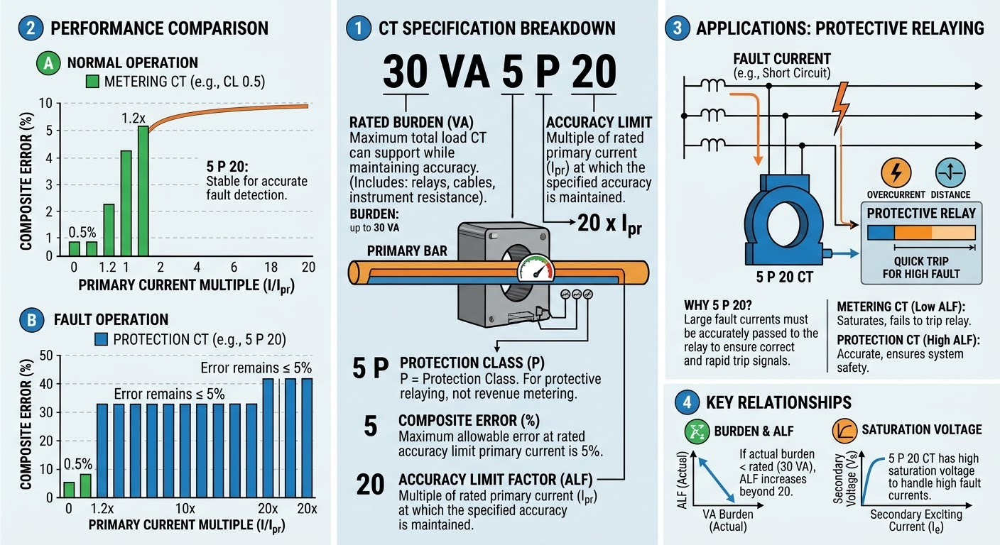

-
IEC Standard Accuracy Classes Of CTs
2026-10-25
The IEC specifies the accuracy of CTs as
30 VA Class 5 P 20
• Rated Burden (30 VA)
• Accuracy class (5%)
• P For protection
• Accuracy limit factor (20)
-
What tests must be performed on current transformers (CTs) before putting them into service?
this article explains the fundamental concepts related to the topic and discusses the key principles engineers should understand. -
What tests must be performed on voltage transformers (VTs) before putting them into service?
Regular maintenance and testing is very important in order to ensure that the protection system... -
Optical Voltage And Current Transformer
Traditional voltage and current transformer imply electromagnetic induction principle to... -
Instrument Transformers
In power systems, currents and voltages are extremely high. Therefore, direct measurement with... -
A List of PSRC Standards and Guidance related to Power System Protection and Control
The IEEE Power System Relaying and Control Committee (PSRC) is one of the 17 technical...